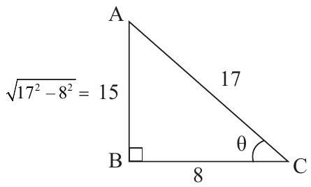

UNIT - IV: INVERSE TRIGONOMETRIC RATIOS AND DIFFERENTIAL CALCULUS-I
Unit 4 Overview
4.1 INVERSE TRIGONOMETRIC FUNCTIONS: Definition of inverse trigonometric ratios - Relation between inverse trigonometric ratios. Simple problems.
4.2 LIMITS: Definition of Limits. Problems using the following results: (i) \(\lim_{x \to a} \frac{x^{n}-a^{n}}{x-a}=n a^{n-1}\) (ii) \(\lim _{\theta \rightarrow 0} \frac{\sin \theta}{\theta}=1\) and (iii) \(\lim _{\theta \rightarrow 0} \frac{\tan \theta}{\theta}=1\) (\(\theta\) - in radians) (results only). Simple Problems.
4.3 DIFFERENTIATION: Definition - Differentiation of \(x^{n}, \sin x, \cos x, \tan x, \operatorname{cosec} x, \sec x, \cot x, \log x, e^{x}, u \pm v, uv, uvw, \frac{u}{v}(v \neq 0)\) (results only) Simple problems using the above results.
4.1 INVERSE TRIGONOMETRIC FUNCTIONS
Definition:
A function which is the reverse process of a trigonometric function is called the inverse trigonometric function.
The domain of a trigonometric function is the set angles and the range is the set of real numbers. In case of inverse trigonometric function, the domain is the set of real numbers and the range is the set of angles.
Inverse trigonometric function of \(\sin x\) is denoted as \(\sin ^{-1} x\). Similarly \(\cos ^{-1} x, \tan ^{-1} x, \sec ^{-1} x, \cot ^{-1} x\) and \(\operatorname{cosec}^{-1} x\) are the inverse trigonometric functions of \(\cos x, \tan x, \sec x, \cot x\) and \(\operatorname{cosec} x\) respectively.
Examples:
We know that
\(\sin 30^{\circ}=\frac{1}{2} \quad \therefore \sin ^{-1}\left(\frac{1}{2}\right)=30^{\circ}\)
\(\cos 0^{\circ}=1 \quad \therefore \cos ^{-1}(1)=0^{\circ}\)
\(\tan 30^{\circ}=\frac{1}{\sqrt{3}} \quad \therefore \tan ^{-1}\left(\frac{1}{\sqrt{3}}\right)=30^{\circ}\)
\(\cot 45^{\circ}=1 \quad \therefore \cot ^{-1}(1)=45^{\circ}\)
\(\sec 30^{\circ}=\frac{2}{\sqrt{3}} \quad \therefore \sec ^{-1}\left(\frac{2}{\sqrt{3}}\right)=30^{\circ}\)
\(\operatorname{cosec} 90^{\circ}=1 \quad \therefore \operatorname{cosec}^{-1}(1)=90^{\circ}\)
If \(x=\sin \theta\), then \(\theta=\sin ^{-1} x\).
\(\sin ^{-1} x\) is an angle.
There is a difference between \(\sin ^{-1} x\) and \((\sin x)^{-1}\). \(\sin ^{-1} x\) is the inverse trigonometric function of \(\sin \theta\) where as \((\sin x)^{-1}\) is the reciprocal of \(\sin x\). i.e, \((\sin x)^{-1}=\frac{1}{\sin x}=\operatorname{cosec} x\).
Principal Value
Among all the values, the numerically least value of the inverse trigonometric function is called principal value.
Examples:
- \(\sin 30^{\circ}=\frac{1}{2}, \sin 150^{\circ}=\frac{1}{2}, \sin 390^{\circ}=\frac{1}{2}\)
\(\sin ^{-1}\left(\frac{1}{2}\right)=30^{\circ}, 150^{\circ}, 390^{\circ}, \ldots \ldots \ldots\)
The least positive value is \(30^{\circ}\); which is called the principal value of \(\sin ^{-1}\left(\frac{1}{2}\right)\). - \(\cos 60^{\circ}=\frac{1}{2}, \cos 300^{\circ}=\frac{1}{2}, \cos \left(-60^{\circ}\right)=\frac{1}{2}, \cos 420^{\circ}=\frac{1}{2}\)
\(\cos ^{-1}\left(\frac{1}{2}\right)=60^{\circ}, 300^{\circ},-60^{\circ}, 420^{\circ}, \dots\)
The principal value of \(\cos ^{-1}\left(\frac{1}{2}\right)\) is \(60^{\circ}\).
| Function | Domain | Range of Principal value of \(\theta\) |
|---|---|---|
| \(\sin ^{-1} \mathrm{x}\) | \(-1 \leq \mathrm{x} \leq 1\) | \(-\pi / 2 \leq \theta \leq \pi / 2\) |
| \(\cos ^{-1} \mathrm{x}\) | \(-1 \leq \mathrm{x} \leq 1\) | \(0 \leq \theta \leq \pi\) |
| \(\tan ^{-1} \mathrm{x}\) | \((-\infty, \infty)\) | \(-\pi / 2 < \theta < \pi / 2\) |
| \(\cot ^{-1} \mathrm{x}\) | \((-\infty, \infty)\) | \(0 < \theta < \pi\) |
| \(\sec ^{-1} \mathrm{x}\) | \(|x| \ge 1\) | \(0 \le \theta \le \pi, \theta \neq \pi / 2\) |
| \(\operatorname{cosec}^{-1} \mathrm{x}\) | \(|x| \ge 1\) | \(-\pi / 2 \le \theta \le \pi / 2, \theta \neq 0\) |
Properties
Property (1) :
- \(\sin ^{-1}(\sin \mathrm{x})=\mathrm{x}\)
- \(\cos ^{-1}(\cos x)=x\)
- \(\tan ^{-1}(\tan \mathrm{x})=\mathrm{x}\)
- \(\cot ^{-1}(\cot x)=x\)
- \(\sec ^{-1}(\sec x)=x\)
- \(\operatorname{cosec}^{-1}(\operatorname{cosec} x)=x\)
Proof:
(a) Let \(\sin x=y \quad (1)\)
\(\therefore \quad x=\sin ^{-1} y\)
\(=\sin ^{-1}(\sin x)\) [from (1)]
\(\therefore \quad \sin ^{-1}(\sin x)=x\)
Similarly other results can be proved.
Property (2):
- \(\sin \left(\sin ^{-1} x\right)=x\)
- \(\cos \left(\cos ^{-1} x\right)=x\)
- \(\tan \left(\tan ^{-1} x\right)=x\)
- \(\cot \left(\cot ^{-1} x\right)=x\)
- \(\sec \left(\sec ^{-1} x\right)=x\)
- \(\operatorname{cosec}\left(\operatorname{cosec}^{-1} x\right)=x\)
Proof:
(b) Let \(\cos ^{-1} x=y \quad (1)\)
Then \(x=\cos y\)
\(=\cos \left(\cos ^{-1} x\right)\) [From (1)]
\(\therefore \cos \left(\cos ^{-1} x\right)=x\)
Similarly other results can be proved.
Property (3):
- \(\sin ^{-1}\left(\frac{1}{x}\right)=\operatorname{cosec}^{-1}(x)\)
- \(\cos ^{-1}\left(\frac{1}{x}\right)=\sec ^{-1}(x)\)
- \(\tan ^{-1}\left(\frac{1}{x}\right)=\cot ^{-1}(x)\)
- \(\cot ^{-1}\left(\frac{1}{x}\right)=\tan ^{-1}(x)\)
- \(\sec ^{-1}\left(\frac{1}{x}\right)=\cos ^{-1}(x)\)
- \(\operatorname{cosec}^{-1}\left(\frac{1}{x}\right)=\sin ^{-1}(x)\)
Proof:
(c) Let \(\tan ^{-1}\left(\frac{1}{x}\right)=y \quad (1)\)
\(\therefore \frac{1}{x}=\tan y\)
\(\therefore x=\frac{1}{\tan y}=\cot y\)
\(\therefore y=\cot ^{-1}(x) \quad (2)\)
From (1) & (2), \(\tan ^{-1}\left(\frac{1}{x}\right)=\cot ^{-1}(x)\)
Similarly other results can be proved.
Property (4):
- \(\sin ^{-1}(-x)=-\sin ^{-1} x\)
- \(\cos ^{-1}(-x)=\pi-\cos ^{-1} x\)
- \(\tan ^{-1}(-x)=-\tan ^{-1} x\)
- \(\cot ^{-1}(-x)=\pi - \cot ^{-1} x\)
- \(\sec ^{-1}(-x)=\pi-\sec ^{-1} x\)
- \(\operatorname{cosec}^{-1}(-x)=-\operatorname{cosec}^{-1} x\)
Proof:
(f) Let \(y=\operatorname{cosec}^{-1}(-x) \quad (1)\)
\(\therefore \operatorname{cosec} y =-x\)
i.e., \(x =-\operatorname{cosec} y\)
\( =\operatorname{cosec}(-y) \quad [\because \operatorname{cosec}(-y)=-\operatorname{cosec} y]\)
i.e., \(\operatorname{cosec}^{-1}(x)=-y\)
\( =-\operatorname{cosec}^{-1}(-x) \quad\) [From (1)]
\(\therefore \operatorname{cosec}^{-1}(-x)=-\operatorname{cosec}^{-1}(x)\)
(e) Let \(y=\sec ^{-1}(-x) \quad (1)\)
\(\therefore \sec y =-x\)
i.e., \(x =-\sec y\)
\( =\sec (\pi-y) \quad [\sec (\pi-y)=-\sec y]\)
i.e., \(\sec ^{-1} x=\pi-y\)
\(\therefore y =\pi-\sec ^{-1} x \quad (2)\)
From (1) & (2), \(\sec ^{-1}(-x)=\pi-\sec ^{-1} x\)
Similarly other results can be proved.
Property (5):
Proof:
Let \(\theta=\tan ^{-1} x \quad (1)\)
\(\therefore x=\tan \theta\)
\(=\cot \left(\frac{\pi}{2}-\theta\right) \quad\left[\because \cot \left(90^{\circ}-\theta\right)=\tan \theta\right]\)
\(\cot ^{-1} x=\frac{\pi}{2}-\theta\)
\(=\frac{\pi}{2}-\tan ^{-1} x\) [From (1)]
\(\therefore \tan ^{-1} x+\cot ^{-1} x=\frac{\pi}{2}\)
Similarly other results can be proved.
Property (6):
If \(xy<1, \tan ^{-1} x+\tan ^{-1} y=\tan ^{-1}\left(\frac{x+y}{1-x y}\right)\)
Proof:
Let \(A=\tan ^{-1} x \quad \therefore x=\tan A \quad (1)\)
Let \(B=\tan ^{-1} y \quad \therefore y=\tan B \quad (2)\)
Now, \(\tan (A+B)=\frac{\tan A+\tan B}{1-\tan A \tan B}\)
\(=\frac{x+y}{1-x y}\)
\(\therefore(A+B)=\tan ^{-1}\left(\frac{x+y}{1-x y}\right)\)
i.e, \(\tan ^{-1} x+\tan ^{-1} y=\tan ^{-1}\left(\frac{x+y}{1-x y}\right)\) [From (1) & (2)]
Property (7):
Proof:
Let \(A=\sin ^{-1} x \quad \therefore x=\sin A \quad (1)\)
Let \(B=\sin ^{-1} y \quad \therefore y=\sin B \quad (2)\)
\(\sin (A+B) =\sin A \cos B+\cos A \sin B\)
\(=\sin A \sqrt{1-\sin ^{2} B}+\sqrt{1-\sin ^{2} A} \sin B\)
\(=x \sqrt{1-y^{2}}+\sqrt{1-x^{2}} y\)
\(A+B =\sin ^{-1}\left[x \sqrt{1-y^{2}}+y \sqrt{1-x^{2}}\right]\)
i.e, \(\sin ^{-1} x+\sin ^{-1} y=\sin ^{-1}\left[x \sqrt{1-y^{2}}+y \sqrt{1-x^{2}}\right]\) [From (1) & (2)]
Property (8):
Proof:
Let \(A=\cos ^{-1} x \quad \therefore x=\cos A \quad (1)\)
Let \(B=\cos ^{-1} y \quad \therefore y=\cos B \quad (2)\)
Now, \(\cos (A+B)=\cos A \cos B-\sin A \sin B\)
\(=\cos A \cos B-\sqrt{1-\cos ^{2} A} \sqrt{1-\cos ^{2} B}\)
\(=x y-\sqrt{1-x^{2}} \sqrt{1-y^{2}}\)
i.e., \(A+B=\cos ^{-1}\left[x y-\sqrt{1-x^{2}} \sqrt{1-y^{2}}\right]\)
From (1) & (2)
\(\cos ^{-1} x+\cos ^{-1} y=\cos ^{-1}\left[x y-\sqrt{1-x^{2}} \sqrt{1-y^{2}}\right]\)
WORKED EXAMPLES
PART - A
1. Find the principal value of
(i) \(\sin ^{-1}\left(\frac{1}{\sqrt{2}}\right)\)
(ii) \(\cos ^{-1}\left(\frac{\sqrt{3}}{2}\right)\)
(iii) \(\tan ^{-1}\left(-\frac{1}{\sqrt{3}}\right)\)
(iv) \(\cot ^{-1}(-1)\)
(v) \(\sec ^{-1}(-2)\)
(vi) \(\operatorname{cosec}^{-1}\left(\frac{2}{\sqrt{3}}\right)\)
Solution:
(i) Let \(x=\sin ^{-1}\left(\frac{1}{\sqrt{2}}\right)\)
\(\therefore \sin x=\frac{1}{\sqrt{2}}\)
i.e, \(\sin x=\sin 45^{\circ} \quad\left[\because \sin 45^{\circ}=\frac{1}{\sqrt{2}}\right]\)
\(\therefore x=45^{\circ}\)
\(\therefore \sin ^{-1}\left(\frac{1}{\sqrt{2}}\right)=45^{\circ}\)
(ii) Let \(x=\cos ^{-1}\left(\frac{\sqrt{3}}{2}\right)\)
\(\therefore \cos x=\frac{\sqrt{3}}{2}\)
\(\cos x=\cos 30^{\circ} \quad\left[\because \cos 30=\frac{\sqrt{3}}{2}\right]\)
\(\therefore x=30^{\circ}\)
\(\therefore \cos ^{-1}\left(\frac{\sqrt{3}}{2}\right)=30^{\circ}\)
(iii) Let \(x=\tan ^{-1}\left(-\frac{1}{\sqrt{3}}\right)\)
\(\therefore \tan x=-\frac{1}{\sqrt{3}}\)
\( =-\tan 30^{\circ} \quad\left[\because \tan 30=\frac{1}{\sqrt{3}}\right]\)
i.e., \(\tan x=\tan \left(-30^{\circ}\right) \quad[\because \tan (-\theta)=-\tan \theta]\)
\(\therefore x=-30^{\circ}\)
\(\therefore \tan ^{-1}\left(-\frac{1}{\sqrt{3}}\right)=-30^{\circ}\)
(iv) Let \(x=\cot ^{-1}(-1)\)
\(\therefore \cot x =-1\)
\( =-\cot 45^{\circ} \)
i.e., \(\cot x=\cot (180^\circ - 45^\circ) = \cot(135^\circ)\) (Principal range for cot is \(0 < \theta < \pi\))
\(\therefore x=135^{\circ}\)
\(\therefore \cot ^{-1}(-1)=135^{\circ}\)
(v) Let \(x=\sec ^{-1}(-2)\)
\(\therefore \sec x =-2\)
\( =-\sec 60^{\circ} \)
i.e., \(\sec x =\sec \left(180^\circ - 60^\circ\right) = \sec(120^\circ) \quad\) (Principal range for sec is \(0 \le \theta \le \pi, \theta \ne \pi/2\))
\(\therefore x=120^{\circ}\)
\(\therefore \sec ^{-1}(-2)=120^{\circ}\)
(vi) Let \(x=\operatorname{cosec}^{-1}\left(\frac{2}{\sqrt{3}}\right)\)
\(\therefore \operatorname{cosec} x=\frac{2}{\sqrt{3}}\)
\(=\operatorname{cosec} 60^{\circ} \quad\left[\because \operatorname{cosec} 60=\frac{1}{\sin 60}=\frac{1}{(\sqrt{3} / 2)}=\frac{2}{\sqrt{3}}\right]\)
\(\therefore x=60^{\circ}\)
\(\therefore \operatorname{cosec}^{-1}\left(\frac{2}{\sqrt{3}}\right)=60^{\circ}\)
2. Prove that \(\tan ^{-1} x+\tan ^{-1}\left(\frac{1}{x}\right)=\frac{\pi}{2}\)
Solution:
LHS \(=\tan ^{-1} x+\tan ^{-1}\left(\frac{1}{x}\right)\)
\(=\tan ^{-1} x+\cot ^{-1}(x)\) [By property 3(c)]
\(=\frac{\pi}{2}\) [By property 5]
PART - B
1. Prove that \(\sin ^{-1}\left(\sqrt{1-x^{2}}\right)=\cos ^{-1} x\).
Solution:
Put \(x=\cos \theta \quad \therefore \theta=\cos ^{-1} x \quad (1)\)
Now, LHS \(=\sin ^{-1}\left(\sqrt{1-x^{2}}\right)\)
\(=\sin ^{-1}\left(\sqrt{1-\cos ^{2} \theta}\right)\)
\(=\sin ^{-1}\left(\sqrt{\sin ^{2} \theta}\right)\)
\(=\sin ^{-1}(\sin \theta)\)
\(=\theta\) [By Property 1]
\(=\cos ^{-1} x\) [By (1)] = RHS
2. Prove that \(\tan ^{-1}\left(\frac{1}{3}\right)+\tan ^{-1}\left(\frac{2}{5}\right)=\tan ^{-1}\left(\frac{11}{13}\right)\).
Solution:
We know, \(\tan ^{-1} x+\tan ^{-1} y=\tan ^{-1}\left(\frac{x+y}{1-x y}\right)\)
\(\therefore \tan ^{-1}\left(\frac{1}{3}\right)+\tan ^{-1}\left(\frac{2}{5}\right) =\tan ^{-1}\left(\frac{\frac{1}{3}+\frac{2}{5}}{1-\frac{1}{3} \cdot \frac{2}{5}}\right)\)
\(=\tan ^{-1}\left(\frac{\frac{5+6}{15}}{\frac{15-2}{15}}\right)\)
\(=\tan ^{-1}\left(\frac{11 / 15}{13 / 15}\right)\)
\(=\tan ^{-1}\left(\frac{11}{13}\right)\) = RHS
PART - C
1. Show that \(2 \tan ^{-1} x=\cos ^{-1}\left(\frac{1-x^{2}}{1+x^{2}}\right)\)
Solution:
Let \(x=\tan \theta \quad \therefore \theta=\tan ^{-1} x\)
R.H.S \(=\cos ^{-1}\left(\frac{1-x^{2}}{1+x^{2}}\right)\)
\(=\cos ^{-1}\left(\frac{1-\tan ^{2} \theta}{1+\tan ^{2} \theta}\right)\)
\(=\cos ^{-1}(\cos 2 \theta)\)
\(=2 \theta\)
\(=2 \tan ^{-1} x=\) L.H.S
2. Show that \(\tan ^{-1}\left(\frac{3 x-x^{3}}{1-3 x^{2}}\right)=3 \tan ^{-1} x\).
Solution:
Let \(x=\tan \theta \quad \therefore \theta=\tan ^{-1} x \quad (1)\)
LHS \(=\tan ^{-1}\left(\frac{3 x-x^{3}}{1-3 x^{2}}\right)\)
\(=\tan ^{-1}\left[\frac{3 \tan \theta-\tan ^{3} \theta}{1-3 \tan ^{2} \theta}\right]\)
\(=\tan ^{-1}(\tan 3 \theta)\)
\(=3 \theta\)
\(=3 \tan ^{-1} x\)
\(=\) RHS [From (1)]
3. Show that \(2 \tan ^{-1}\left(\frac{2}{3}\right)=\tan ^{-1}\left(\frac{12}{5}\right)\)
Solution:
LHS \(=2 \tan ^{-1}\left(\frac{2}{3}\right)\)
\(=\tan ^{-1}\left(\frac{2}{3}\right)+\tan ^{-1}\left(\frac{2}{3}\right)\)
\(=\tan ^{-1}\left(\frac{\frac{2}{3}+\frac{2}{3}}{1-\frac{2}{3} \cdot \frac{2}{3}}\right)\)
\(=\tan ^{-1}\left[\frac{\frac{4}{3}}{1-\frac{4}{9}}\right]\)
\(=\tan ^{-1}\left[\frac{\frac{4}{3}}{\frac{9-4}{9}}\right]\)
\(=\tan ^{-1}\left(\frac{4}{3} \times \frac{9}{5}\right)\)
\(=\tan ^{-1}\left(\frac{12}{5}\right)=\) RHS
4. Evaluate \(\tan \left[\cos ^{-1}\left(\frac{8}{17}\right)\right]\).
Solution:
Let \(\cos ^{-1}\left(\frac{8}{17}\right)=\theta \quad (1)\)
\(\therefore \cos \theta=\frac{8}{17}\)
Construct a right triangle where adjacent = 8, hypotenuse = 17.
Opposite side \(AB=\sqrt{AC^{2}-BC^{2}}=\sqrt{17^{2}-8^{2}}\)
\(=\sqrt{289-64}=\sqrt{225}\)
\(\therefore AB=15\)

\(\therefore \tan \theta=\frac{\mathrm{Opp}}{\mathrm{Adj}}=\frac{15}{8}\)
\(\therefore \theta=\tan ^{-1}\left(\frac{15}{8}\right) \quad (2)\)
From (1) & (2), \(\cos ^{-1}\left(\frac{8}{17}\right)=\tan ^{-1}\left(\frac{15}{8}\right)\)
\(\therefore \tan \left[\cos ^{-1}\left(\frac{8}{17}\right)\right]=\tan \left[\tan ^{-1}\left(\frac{15}{8}\right)\right]\)
\(=\frac{15}{8}\)